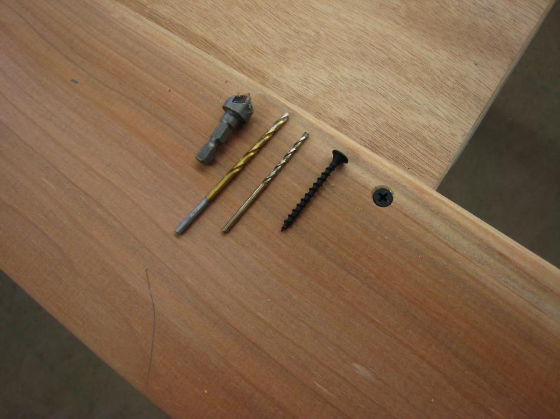

| Stringers | Menu Last Page Next Page |
|

The 10' X 6" X 5/8" redwood boards are attached to the table using 2 deck screws. The boards are attached with approximately 2" of the boards atop the door with the rest overhanging. As you cut the stringers, and approach the door, move the board to about 1.25" overlap and screw in place. Screwing a second board next to the first will provide additional stabilty for the saw. On the Sea Bee, I was able to measure and cut the stringers with no waste. The final cut left a 1 1/4" stringer that was used for the forward deck ridge.
|
|